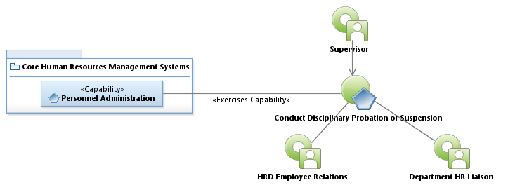
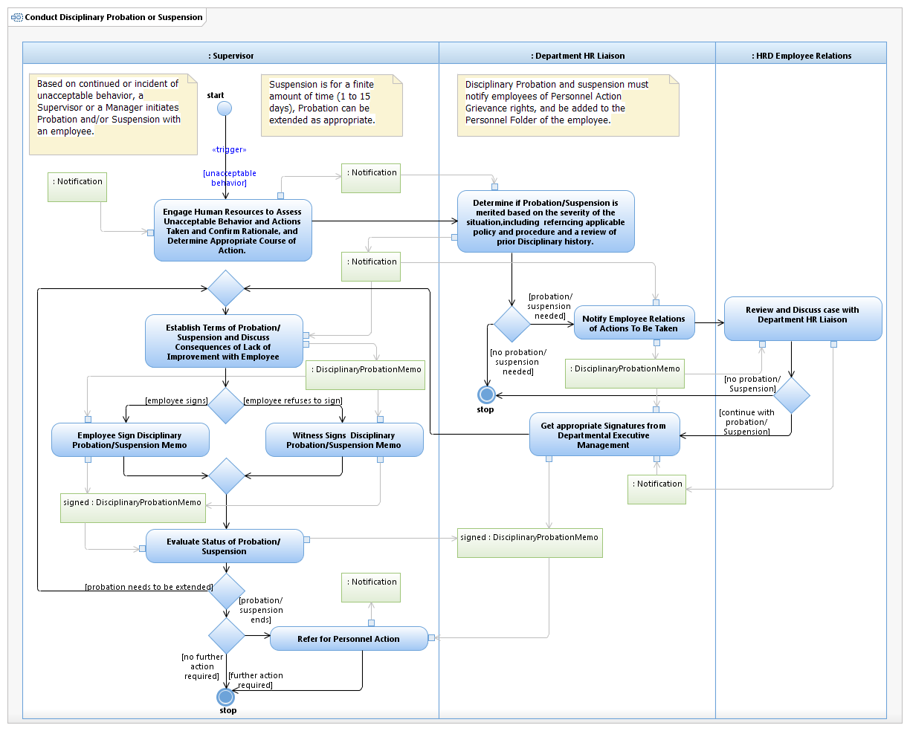

Use Case Model: Conduct Disciplinary Probation or Suspension
Architect: Aaron Brown, IT Enterprise Architect, Senior
Date Last Modified: 02/20/2013
User Review: Margery Reue, Jeff Burton
Date: 02/20/2013
The employee has received multiple verbal and/or written reprimands for unacceptable behavior, and now Probation or suspension is the next step in the disciplinary process. A suspension is without Pay, and the employee is not at work. For Probation, the employee works and is paid as expected; however, their performance/behavior is monitored during this period.
Follow link to Role Definitions

Use Case Model: Conduct Disciplinary Probation or Suspension

Activity Model: Conduct Disciplinary Probation or Suspension
Activity Documentation
| Activity | Documentation |
|---|---|
| Refer for Personnel Action | End Probation, continue (or extend), reassignment, or termination. |
Note: When the activity is self explanatory no documentation is provided.